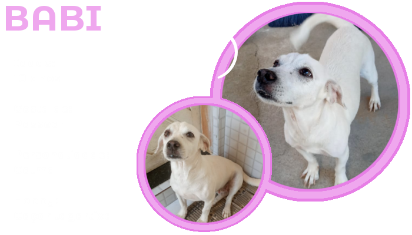
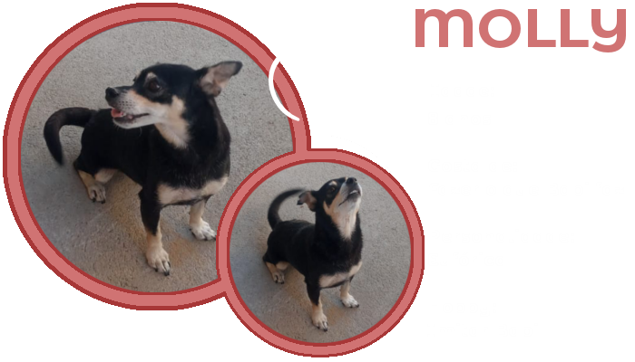

Meu gosto musical é muito diversificado, escuto um pouco de tudo, porém não sou muito chegado a rock e trap. Acho que os gêneros musicais que mais escuto hoje em dia é forró, funk e k-pop.
Aprendi a tocar violão desde os 10 anos de idade. Hoje em dia eu não sou tão ativo como era antes, mas de vez em quando eu gosto de aprender e tocar algumas músicas.
Além de tocar violão, pretendo, futuramente, aprender teclado e violino, pois gosto muito do som que esses instrumentos fazem.
Eu sempre gostei de desenhar, porém acabei perdendo muito a prática nos últimos anos e não sabia fazer mais nada até um tempo atrás XD. Voltei a desenhar com mais frequência em 2019 e aproveitei o momento de isolamento em 2020 para praticar ilustração digital usando o celular como ferramenta.
Eu adoro animais. Sempre fui criado rodeado de cachorros, pois meus pais sempre adotavam. Hoje em dia eu tenho essas duas serumaninhas pra cuidar. Essa branquinha se chama Babi, ela tem 10 aninhos e é muito dócil. A pretinha se chama Molly, ela tem 8 aninhos, é a primogênita filha de Babi e ela é muito brincalhona.


Games também é um assunto que chama a minha atenção. É o meu passa tempo do fim de semana. Não gosto muito de jogar sozinho, por isso que em alguns sábados ou domingos eu e meus amigos tiramos uma noite para conversar e jogar aquele Lolzinho, Gartic, Stop, Among us e outros.
Além de jogar vários jogos, nesse isolamento, também tive oportunidade de fazer um curso básico de programador de jogos digitais no programa novos caminhos, disponibilizado pelo IMD. Aprendi muitas coisas de áreas diferentes, já que a produção de um jogo demandam vários conhecimentos de áreas distintas.
Já havia mencionado antes, mas sou apaixonado por programação e isso não podia estar fora dos meus interesses. Acho muito interessante a lógica de como as coisas funcionam por atrás de uma aplicação, como os dados são manipulados e como as operações funcionam.
Como portfólio, eu tenho esse projeto que eu desenvolvi durante o ensino técnico. Era apenas um projeto para compor nota, mas foi muito legal construir essa página, porque, além de ser sobre o universo de Harry Potter que eu sou super fã, eu pude ver de perto como funciona o Front/Back End, também me dediquei muito aprendendo a linguagem PHP e acabei me aprofundando um pouco mais do que foi cobrado.